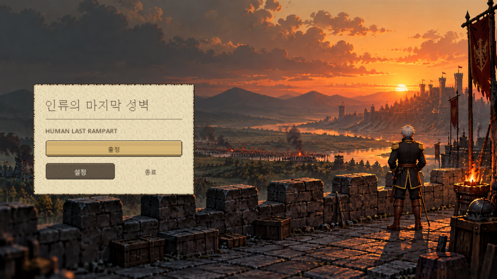
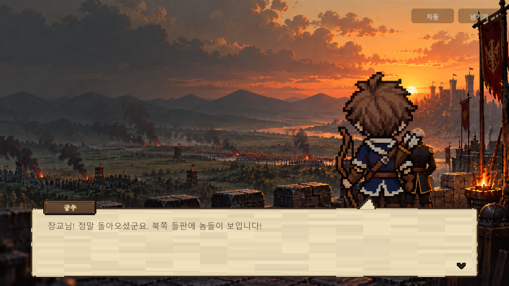
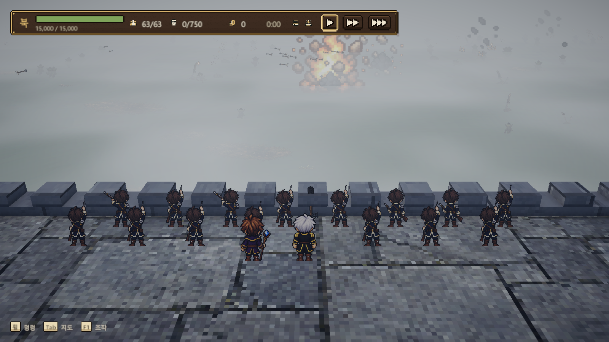
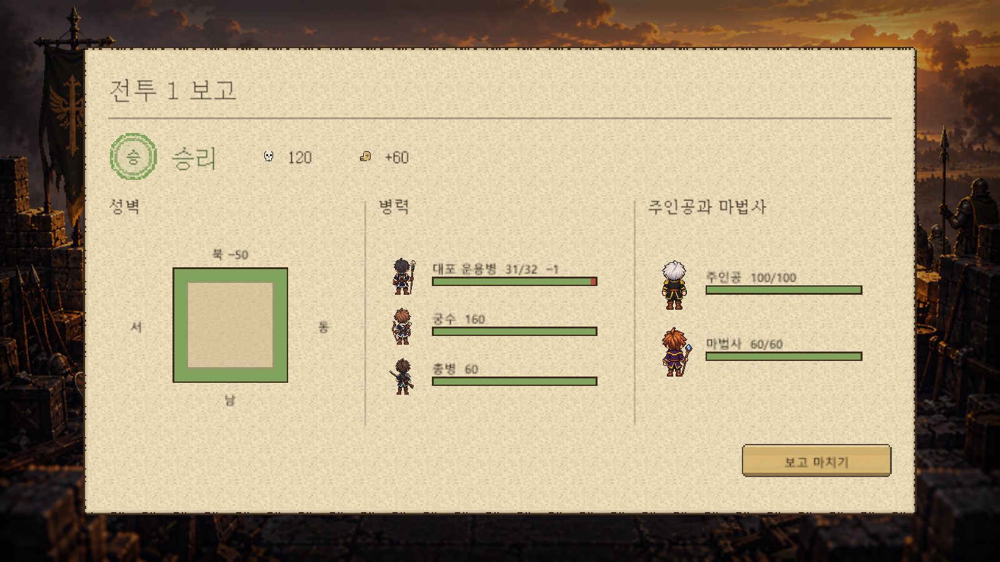
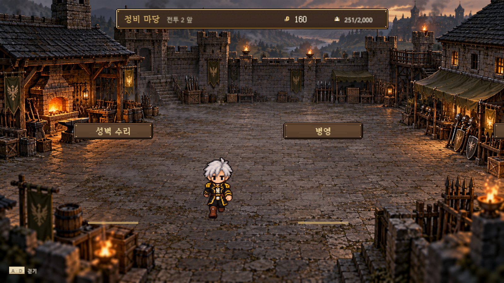
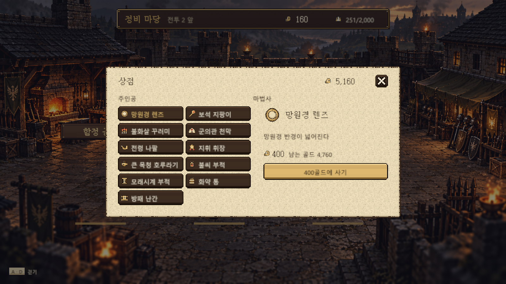

화면 다시 설계 2판 — 슬롭은 피하고, 잘 만든 게임에서 배운다
- 작성 Claude · 2026-10-20 · 사용자 지시 "AI 슬롭은 지양해야 한다. 성공한 게임과 AI 슬롭을 비교하고, 우리 게임을 어떻게 고칠지 설계하라"
- 기준 사진: 오늘(2026-10-20) 자동 시험에서 찍은 화면 —
Docs/References/ui_redesign_v2/now_*.png - 앞선 기준
UI_NoSlop.md(K-047, 증상 S-01~S-30)는 그대로 유효하다. 이 문서는 그 위에 새로 알게 된 것과 화면별 수정 설계를 더한다 - 상태: 설계안 — 사용자 결정 대기(맨 아래 결정 목록). 구현 전
---
지금 화면 사진 (2026-10-20)






1. AI 슬롭이란 (조사 요약)
AI 슬롭은 "평균값으로 만든 화면"이다. 언어·그림 모델은 학습한 자료의 평균을 내놓기 때문에, 일부러 고른 것이 없는 무난한 결과가 나온다. 조사에서 반복해서 나온 증상:
| 갈래 | 슬롭 증상 | 출처 |
|---|---|---|
| 글자 | 흔한 기본 글꼴 하나로 전부, 크기 단계가 평평함(제목과 본문이 비슷), 작고 가는 글, 낮은 대비 | impeccable, 925studios |
| 색 | 보라·청록 그라데이션, 빛 번짐 후광, 따뜻한 크림·베이지 바탕(요즘 AI가 '고상한' 기본값으로 고르는 색), 색 바탕 위 회색 글 | impeccable, 925studios |
| 배치 | 가운데 큰 판 + 같은 모양 카드 격자, 판 안에 판, 모든 간격이 같음, 제목 위 작은 이름표, 같은 글 반복 | impeccable, superdesign |
| 장식 | 뜻 없는 줄·띠, 테두리+그림자 둘 다, 지나치게 둥근 모서리, 뜻 없는 반짝임 | impeccable |
| 도트 그림 | 점 크기가 섞임(믹셀), 점이 격자를 벗어남, 중간색·부드러운 가장자리, 색이 수천 개, 외곽선 굵기가 들쭉날쭉 | rangy, oreate, gigazine(Pixel Snapper) |
핵심: 슬롭은 '틀린 것'보다 '고르지 않은 것'이다. 고치는 법도 같다 — 이 게임만의 제약(재질, 색 뜻, 글꼴, 점 크기)을 정하고 모든 화면이 그걸 따르게 한다.
2. 성공한 게임들은 어떤 방향인가
조사에서 확인된 것과 일반적으로 알려진 관찰을 나눠 적는다.
| 게임 | 배울 점 | 근거 |
|---|---|---|
| Into the Breach | "세 번 읽기": 화면을 보면 ① 게임의 핵심(격자·기체·적·불)이 먼저 ② 다음 정보 ③ 세부 순으로 눈에 들어온다. 읽기 쉬움을 위해 규칙 복잡도까지 줄였다 | Zach Gage GDC 2018 강연(gigazine 정리), 개발 회고 |
| 옥토패스 트래블러 (HD-2D) | 화면 장식은 물러서고 그림이 주인공. 점 그림을 3D 빛 속에 또렷하게. 창은 단순한 어두운 판 + 가는 장식선, 글은 읽기 쉬운 글꼴 | 언리얼 개발 인터뷰(스타일 의도), 창 모양은 일반 관찰 |
| Kingdom Rush (타워 디펜스) | 늘 보이는 정보는 체력·골드·웨브 세 개뿐, 짓기 메뉴는 탑 자리에 동그랗게 뜬다(필요한 곳에서만). 단, 새 판에서 숫자 글자가 작아 읽기 어렵다는 불만이 있었다 — 크기가 생명 | 일반 관찰, Steam 토론 |
| Darkest Dungeon | 세계관 재질(낡은 종이·쇠·가죽)로 만든 화면, 전용 글꼴 한 벌로 강한 개성 | 일반 관찰 (조사에서 직접 분석 자료는 못 찾음) |
| They Are Billions (대군 방어) | 수천 마리 적 위에서 화면은 작은 띠와 작은 지도만 — 전장을 가리지 않는다 | 일반 관찰 |
| 접근성 기준 (Xbox·게임 접근성 지침) | 글 대비 4.5:1 이상, 글자 최소 16pt 이상, 글 뒤에 판 또는 외곽선, 색만으로 뜻을 전하지 말 것, 글자 크기 키우기 설정 | Xbox 접근성 지침 102, gameaccessibilityguidelines |
공통 방향 다섯 가지:
- 그림이 먼저, 화면 판은 물러선다 (전장·마당을 가리지 않는다)
- 정보는 필요한 곳·필요한 때에만 (늘 보이는 것은 최소, 나머지는 그 자리에서 뜬다)
- 세 번 읽기 위계 (가장 중요한 것 하나가 압도적으로 크다)
- 세계관 재질로 만든 화면 (단, 재질 하나를 모든 판에 바르지 않는다)
- 글자는 크고 굵고 대비가 높다 + 전용 글꼴로 개성
3. 우리 화면 진단 (오늘 사진)
| 화면 | 잘 된 것 | 슬롭 증상 | 성공 게임과 다른 점 |
|---|---|---|---|
| 메인 | 노을 성벽 그림 | 크림색 판 + 가는 제목 글꼴(평평한 위계), 노란 단추 위 흐린 글, 영어 부제 작게(제목 위·아래 이름표) | 옥토패스·다키스트는 제목이 그림의 일부(전용 글씨). 우리는 판 안 글자 |
| 스토리 | 노을 배경, 말풍선 꼬리 | 대사창 종이 무늬가 늘어나 가로 줄무늬, 초상 점 크기가 배경과 다름(믹셀), 이름표 작음 | 옥토패스 대사창은 단순한 어두운 판·큰 글 |
| 전투 | 위쪽 띠 하나로 정리 | 띠 안 숫자·아이콘이 작음(Kingdom Rush가 들은 불만과 같음), 아래 조작 안내 아주 작음, 성벽 바닥 점이 캐릭터 점보다 훨씬 큼(믹셀) | They Are Billions처럼 전장 우선은 맞음. 숫자 크기만 키우면 됨 |
| 결과 | 도장·막대·초상 한 장 | 크림색 큰 판이 화면 전체(판 = 화면), 가는 제목, 빈 공간이 많아 위계가 평평 | Into the Breach식 첫 읽기(승리/패배·잃은 병사)가 압도적이어야 함 |
| 정비 마당 | 그림 좋음, 간판 또렷 | 간판 아래 뜻 없는 금색 줄, 배경 그림의 점 크기가 주인공과 다름(믹셀) | 마당 자체가 화면(좋음). 장식선만 뺄 것 |
| 상점 | 아이콘 연결로 나아짐 | 같은 모양 단추 11개 격자, 판 안에 판, 오른쪽 '마법사' 이름표가 주인공 물건 위에(혼동), 노란 단추 글 대비 약함 | 상점은 '진열대'여야 함 — 물건 그림이 주인공, 이름은 그 아래 |
가장 큰 문제 셋:
- 크림색 종이를 모든 판에 바름 — 조사에서 AI가 고르는 '고상한 기본값'으로 꼽힌 색이다. 우리 기준(UI_NoSlop 3.2 재질 세 가지)은 지켰지만 종이가 너무 많다
- 글자가 가늘고 작고 흐림 — 한글 글꼴 결정(P1-U05)을 계속 미뤄서 시스템 글꼴 계열 그대로
- 점 크기가 화면마다 섞임(믹셀) — 코덱스가 그림 생성으로 만든 배경(메인·스토리·마당)과 바닥 질감이 캐릭터·화면 점과 크기가 다르다. 도트 게임에서 가장 'AI 같아 보이는' 증상
4. 다시 설계 — 규칙
4.1 한 문장 원칙 (바꿈)
"전장의 물건으로 만든 화면 — 지휘관이 실제로 쓰는 나무 간판, 쇠와 가죽, 봉인한 명령서. 그림을 가리지 않고, 필요한 순간에만 손에 들린다."
4.2 재질 비율 (새로 정함)
| 재질 | 쓰는 곳 | 비율 목표 |
|---|---|---|
| 어두운 나무 + 쇠 테 (기본 판) | 상점·훈련·모집·설정·명령 메뉴 — 대부분의 판 | 약 70% |
| 종이(명령서·보고서) | 문서인 것만: 전투 결과 보고, 스토리 대사, 계약서 | 약 20% |
| 황동 | 주 행동 단추 한 개, 선택 표시 | 약 10% |
- 종이 색은 지금 크림(밝은 베이지)에서 누런 낡은 종이 + 짙은 먹 글로 옮긴다(채도 낮게, 얼룩·접힌 자국). '깨끗한 크림'이 슬롭의 핵심 인상이다
4.3 글자
- 전용 한글 도트 글꼴 한 벌을 정한다. 후보(모두 무료·상업 이용 가능한 공개 글꼴 — 사용 전에 각 글꼴의 사용권 문서를 다시 확인한다):
- 갈무리(Galmuri) — 11·14 크기, 굵게 있음, 도트 게임에 많이 쓰임
- Neo둥근모 — 옛 도스 느낌, 한 크기
- 둥근모꼴 — 더 굵고 둥근 느낌
- 제목만 따로: 코덱스 K-083 제목 글씨 그림(전용 손글씨)
- 크기는 화면 점 격자의 정수배만(1080p 기준 3px 점이면 글꼴 11px 원본 × 3 = 33px 등). 한 화면에 크기 세 단계까지: 큰 제목·본문·작은 보조
- 대비: 판 위 글 4.5:1 이상(검사 도구로 숫자 확인). 전장 위에 뜨는 글은 1점 검은 외곽선
- 최소 크기: 1080p에서 본문 24px, 보조 20px 아래로 내리지 않는다(지금 전투 아래 안내 글이 이보다 작다)
4.4 점 크기 하나로 (믹셀 금지)
- 화면 위 모든 도트(아이콘·판 테두리·글꼴·캐릭터 초상)는 원본 1점 = 화면 3px(1080p)
- 그림 생성으로 만든 배경은 점 격자로 다시 맞춘다(가장 가까운 점 크기로 줄였다가 정수배로 키우기 + 색 수 줄이기). 안 맞으면 쓰지 않는다
- 전장 바닥 질감은 캐릭터 점과 같은 크기가 되게 반복 크기를 고친다
- 검사: 사진을 4배로 키워서 점 크기가 두 가지 이상 보이면 실패
4.5 정보는 필요한 곳에서 (Kingdom Rush·Into the Breach)
- 전투에서 늘 보이는 것: 위쪽 띠의 성벽 체력·병력·적 수·골드·시간 다섯 개만, 지금보다 1.5배 크게
- 조작 안내(휠·Tab·F1)는 처음 3번만 보이고 사라진다. F1을 누르면 다시
- 명령·대포·마법 메뉴는 이미 '그 자리에서 뜨는' 방식(D-072) — 유지
- 위험(성벽 무너짐·병력 70% 근접)은 색 + 모양 + 소리 셋으로(색만으로 전하지 않는다)
4.6 세 번 읽기 위계 (화면마다 첫 읽기를 정한다)
| 화면 | 첫 읽기 (압도적으로 크게) | 둘째 | 셋째 |
|---|---|---|---|
| 메인 | 제목 글씨 그림 + 성벽 위 주인공 | 출정 | 설정·종료 |
| 전투 | 전장과 적 무리 | 위 띠 다섯 숫자 | 메뉴·알림 |
| 결과 | 승리/패배 도장과 잃은 병사 수 | 성벽 4면 상태 | 병종별 막대·영웅 |
| 정비 마당 | 마당과 주인공 | 장소 간판 | 골드·병력 띠 |
| 상점 | 진열된 물건 그림 | 고른 물건의 효과·가격 | 가진 수·장착 |
| 스토리 | 인물과 대사 | 이름표 | 자동·넘기기 |
5. 화면별 수정 설계
메인
- 크림 판을 없앤다. 왼쪽 3분의 1 어둠 위에 제목 글씨 그림(K-083) → 그 아래 출정(황동, 크게) → 이어하기·설정·종료(작은 나무 간판 글, 판 없이 한 줄씩)
- 영어 부제는 제목 그림 안에 작게 넣거나 뺀다(따로 이름표로 두지 않는다)
- 배경은 K-083 그림으로 바꾸고 점 격자 맞추기
스토리
- 대사창: 늘어난 종이 → 9칸 나눔 + 반복 무늬(늘리지 않음). 색은 4.2의 낡은 종이 또는 어두운 판(결정 필요)
- 글자 33px(갈무리 11 × 3) 이상, 줄 간격 1.5배
- 초상은 6판(K-071)으로 바꾸고 배경과 같은 점 크기로
전투
- 위 띠 숫자·아이콘 1.5배, 띠는 그대로 한 줄
- 아래 조작 안내 4.5대로(처음만)
- 성벽 바닥 질감 점 크기를 캐릭터와 맞춤(4.4)
- 폭발 사진에 찍히는 파란 십자 조각 원인 찾기(지금 남은 오류)
결과
- 화면 전체를 덮는 크림 판 → 봉인한 보고서 한 장(화면의 약 60%, 낡은 종이), 뒤로 성벽 배경이 보이게
- 맨 위 승리/패배 도장을 지금의 2배, 바로 옆에 "잃은 병사 −N" 크게 (첫 읽기)
- 성벽 도식은 4면 색 + 숫자, 병종 막대는 아이콘과 함께(이미 있음)
정비 마당
- 간판 아래 금색 줄 삭제(뜻 없는 장식)
- 마당 배경 점 격자 맞추기(4.4)
- 위 띠 글자 크기 4.3대로
상점·훈련·모집 (가장 크게 바뀜)
- 같은 단추 격자 → 진열대: 나무 선반 칸마다 물건 아이콘을 2배(64px)로 놓고 이름은 그 아래 작게, 가격은 꼬리표. 고른 물건은 들어 올려진 모습(위로 4px + 황동 테)
- 오른쪽 설명은 판 안의 판 없이 선반 오른쪽 벽에 걸린 꼬리표 한 장: 큰 아이콘·이름·효과 한 줄·가격·[사기] 황동 단추 하나
- '주인공/마법사' 작은 이름표 대신 선반 칸을 둘로 나누고 칸 위에 인물 얼굴 아이콘
- 훈련: 병종 세 개를 세 기둥으로(궁수·총병·대포병), 기둥마다 1~3단계 문양이 아래에서 위로 쌓임 — 지금 몇 단계인지 한눈에
- 모집: 성벽 4면 지도 위에서 성벽을 누르고 인원 숫자를 올리는 방식(지금 성벽 탭 4개 대신)
6. 구현 순서 (제안)
- 글꼴 결정(사용자) → 글꼴 넣고
UiTokens크기 세 단계 정리 — 모든 화면이 한 번에 나아짐 (Claude, 반나절) - 재질 비율 — 크림 종이를 문서만 남기고 나머지 판을 어두운 나무로, 종이 색 바꾸기 (Claude 코드 + 코덱스 종이 질감 1장)
- 점 크기 맞추기 — 배경 그림 3장·바닥 질감 다시 맞춤 (코덱스 카드 하나)
- 결과·메인·스토리 화면 고치기 (Claude, K-071·K-083 그림 연결 포함)
- 상점·훈련·모집 진열대 (코덱스: 선반·꼬리표 그림 / Claude: 화면 코드)
- 전투 띠 크기·조작 안내 (Claude)
- 매 단계 사진을 찍어 4장 검사표(UI_NoSlop 4장 + 이 문서 4.3·4.4)로 확인
7. 사용자 결정 필요
- 한글 도트 글꼴: 갈무리 / Neo둥근모 / 둥근모꼴 (후보 사진을 보고 고르기)
- 종이 재질을 '문서만'으로 줄이는 것 (결과·스토리·계약서만 종이, 나머지 어두운 나무)
- 스토리 대사창: 낡은 종이 / 어두운 판
- 상점을 진열대 방식으로 바꾸는 것
- 조작 안내를 처음 3번만 보이게 하는 것
출처
- impeccable.style — AI 디자인 증상 목록
- How to detect AI slop in your design
- AI Slop Fonts and Gradients (925studios)
- How to make AI UI look less generic (superdesign)
- AI Pixel Art: Why It Isn't Really Pixel Art (rangy)
- The grid never lies — AI 도트 판별
- Pixel Snapper (gigazine)
- Zach Gage "한눈에 이해되는 게임" 정리 (gigazine)
- Into the Breach 개발 회고 (GDC Vault)
- 옥토패스 트래블러 HD-2D (언리얼 인터뷰)
- Kingdom Rush 글자 크기 불만 (Steam 토론)
- Xbox 접근성 지침 102 — 대비
- 게임 접근성 지침
- Unity — 몰입을 해치지 않는 UI